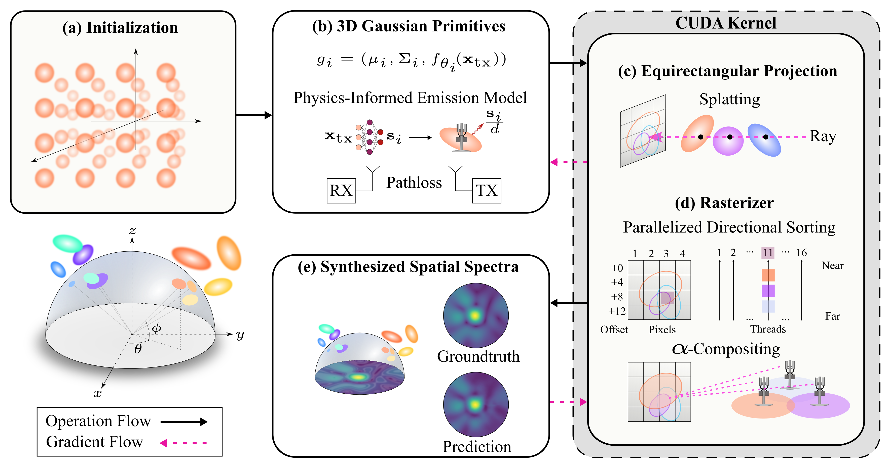
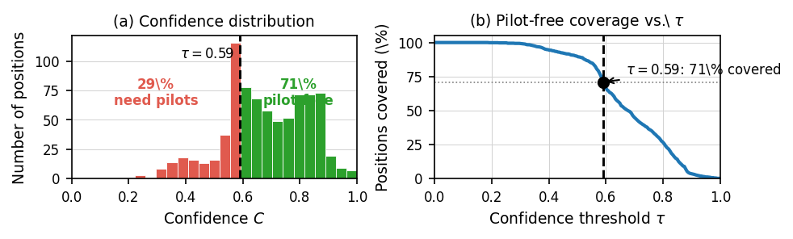
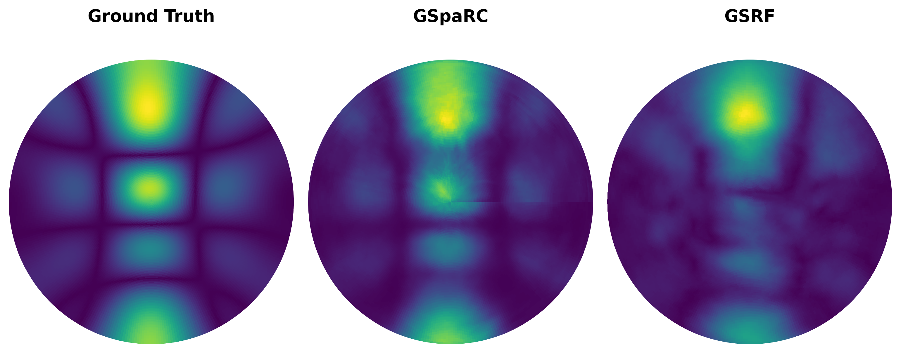
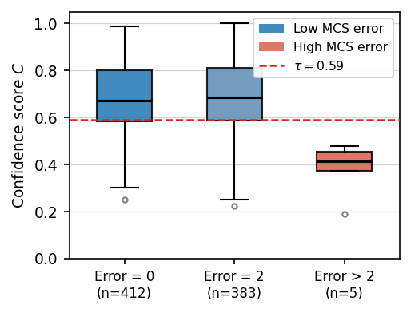
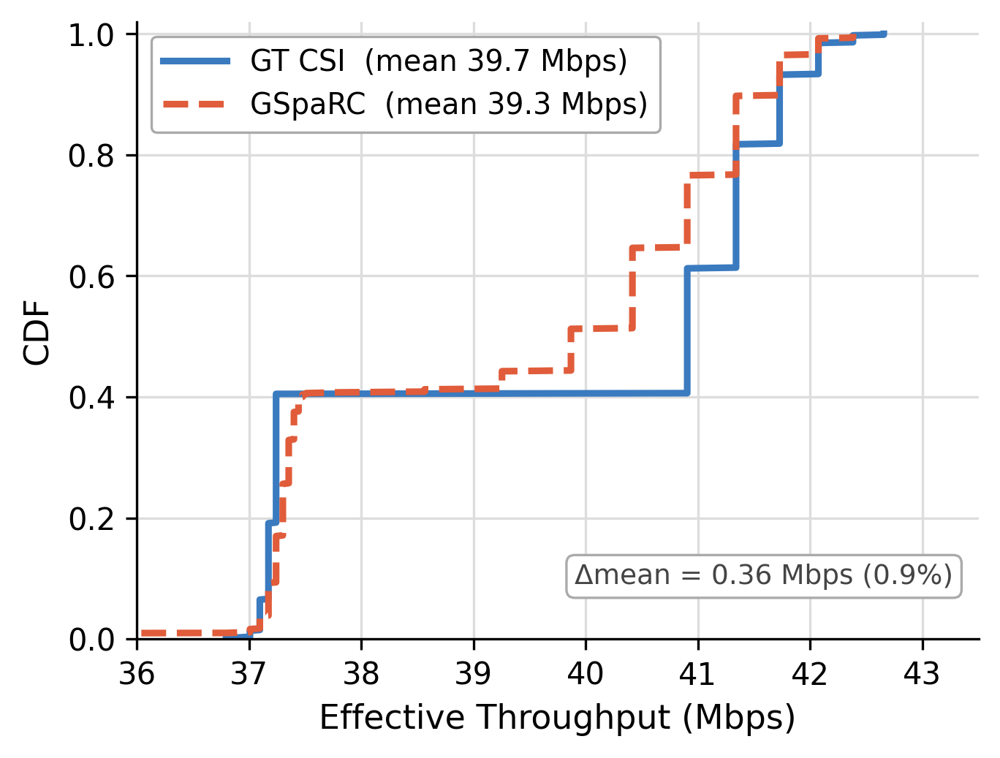
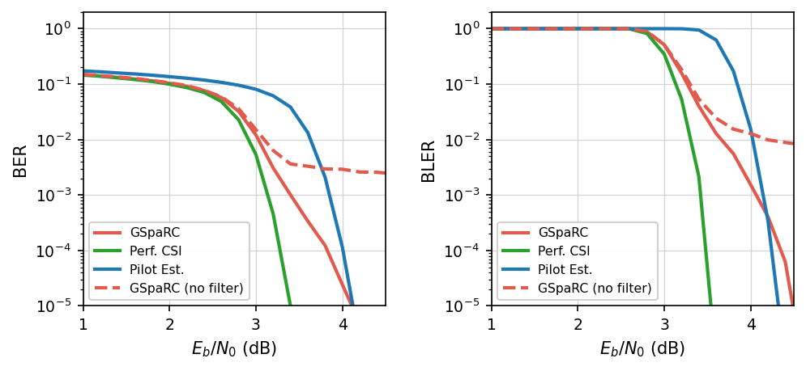

Abstract
Channel state information (CSI) is essential for adaptive beamforming and maintaining robust links in wireless communication systems. However, acquiring CSI incurs significant overhead, consuming up to 25% of spectrum resources in 5G networks due to frequent pilot transmissions at millisecond-scale intervals. Recent approaches aim to reduce this burden by reconstructing CSI from spatiotemporal RF measurements, such as signal strength and direction-of-arrival. While effective in offline settings, these methods often suffer from inference latencies in the 5-100 ms range, making them impractical for real-time systems. We present GSpaRC: Gaussian Splatting for Real-time Reconstruction of RF Channels, a method that achieves accurate channel reconstruction with latency in the low-millisecond regime or below. GSpaRC represents the RF environment using a compact set of 3D Gaussian primitives, each parameterized by a lightweight neural model augmented with physics-informed features such as distance-based attenuation. Unlike traditional vision-based splatting pipelines, GSpaRC is tailored for RF reception: it employs an equirectangular projection onto a hemispherical surface centered at the receiver to reflect omnidirectional antenna behavior. A custom CUDA pipeline enables fully parallelized directional sorting, splatting, and rendering across frequency and spatial dimensions. Evaluated on multiple RF datasets, GSpaRC achieves similar CSI reconstruction fidelity to recent state-of-the-art methods while reducing training and inference time by over an order of magnitude. These results illustrate that modest GPU computation can substantially reduce pilot overhead, making GSpaRC a scalable low-latency approach for channel estimation in 5G and future wireless systems.
Pipeline

Overview of the GSpaRC pipeline. Anisotropic 3D Gaussians are splatted at the receiver position; each Gaussian's complex emission is predicted by a lightweight MLP. The transmitter position is constant, so the MLP is conditioned on the receiver position. The rasterizer accumulates contributions into a directional spectrum, supervised against ground-truth measurements during training.
Confidence-Aware Reconstruction

Example confidence distribution and pilot-free coverage on the Argos dataset. (a) Positions with high confidence predicted by GSpaRC require no pilot transmission. (b) Coverage curve showing pilot-free fraction vs. confidence threshold. GSpaRC identifies the approx 70% of receiver positions that exceed the accuracy threshold for downstream tasks.
Sionna Simulation and Dataset
To evaluate GSpaRC in a controlled yet realistic propagation environment, we generate an indoor dataset using the Sionna ray tracer. We use a conference room scene spanning 14m x 10m with a 4m ceiling, including tables, chairs, glass partitions, and irregular wall materials that create rich multipath propagation.

Conference room scene used for Sionna ray-tracing.
Quantitative Comparison
The following tables present a comparison of GSpaRC with baseline methods (NeRF², WRFGS+, and GSRF) across the Sionna and RFID datasets. GSpaRC consistently achieves superior reconstruction quality and significantly faster rendering times.
Table 3: Sionna Conference Room
| Algorithm | SSIM ↑ | MSE ↓ | Train (hrs) |
|---|---|---|---|
| NeRF² | 0.69 | 0.00513 | 4.15 |
| WRFGS+ | 0.71 | 0.00550 | 3.67 |
| GSRF | 0.70 | 0.00512 | 1.1 |
| GSpaRC | 0.78 | 0.00417 | 1.0 |
Table 4: RFID Dataset
| Algorithm | SSIM ↑ | MSE ↓ | Render (ms) |
|---|---|---|---|
| WRFGS+ | 0.78 | 0.0112 | 8 |
| NeRF² | 0.75 | 0.0101 | 230 |
| GSRF | 0.82 | 0.0094 | 23 |
| GSpaRC | 0.82 | 0.0134 | 0.8 |
Qualitative Results

Qualitative spectrum reconstruction on the Sionna dataset. Left to right: ground truth, GSpaRC prediction, and GSRF prediction.
Downstream Tasks
We evaluate the utility of GSpaRC-predicted CSI for real-time communication tasks using the real-world Argos CSI dataset. These downstream evaluations demonstrate that our confidence-aware approach can effectively replace pilot-based estimation in practical wireless systems.
Confidence-Aware Link Adaptation
Our spatially grounded representation supports real-time link adaptation. By predicting channel quality across receiver locations, GSpaRC enables effective Modulation and Coding Scheme (MCS) selection, achieving throughput nearly identical to that obtained with ground-truth CSI.

MCS Selection Error Distribution

Effective Throughput CDF
Confidence-Aware Communication
GSpaRC-reconstructed channels enable accurate symbol detection. We evaluate Bit Error Rate (BER) and Block Error Rate (BLER) across different signal-to-noise ratios, demonstrating that our real-time reconstruction matches the performance of perfect CSI in practical regimes.
